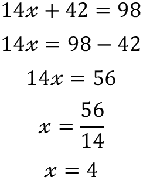

The substituation method is a means of solving a simultaneous equation by means of rearrenging one equation and then substituting into the other equation.
Here are the two equations that will be used in the example to try and find the value of x and y.
Step 1: Re-arranged one of the equations so that it either reads "x = ..." or "y = ...". In this example the equation has been arrenged so that it is in the form "x = ..." but in general it does not matter whether it is "x = ..." or "y = ..." as long as it is one or the other. Likewise it does not matter which of the two equations are re-arrenged for the substituation in this example equation 1 has been re-arrenged.
Step 2: Now that Equation 1 has been re-arranged we can now substitute the value of x in equation 2 for the value of x in equation 1.
Step 3: Expand the substituted value of the variable.
Step 4: Re-arranged the new equation so that the "y" numbers are on one side (typically the left) and the other numbers (ones which are not a multiplication of y) to the other side (right).
Now we have the value of y we can use it to find the value of x.
Here we have have substituted the value of y into Equation 1. Now once again we can re-arrenge the equation to get the value of the unknown value.
Once you have derived two values for x and y, you can check them by substituting them back into the equations and if the left hand side is the same as the right hand side, as seen above, then the two values for x and y are correct.